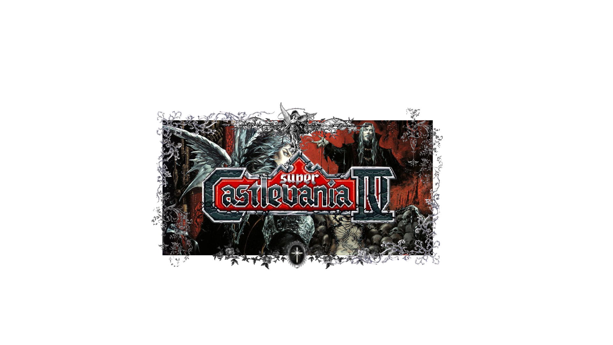

Castlevania é uma série de jogos lançados primeiramente no Japão
que mistura ação e aventura com terror
em um modelo de gameplay fundado pela franquia,
os MetroidVania (junção de Castlevania com Metroid,
que também ajudou a consolidar o gênero).
Estreou em 26 de setembro de 1986
para o Famicom Disk System, intitulado Akumajō Dracula.
A maioria das histórias desse universo são ambientadas no castelo do Drácula,
uma construção gótica e diabólica que ressurge de era em era.
Seu anfitrião, o Conde Drácula, é o principal antagonista,
e nesse universo não é apenas um vampiro super rico
nos confins dos Cárpatos,
mas o próprio mal encarnado
uma representação direta do Diabo.
Seu único objetivo é destruir a humanidade,
e para fazer frente ao legado do vampirão das trevas,
o clã de caçadores de vampiros Belmont
luta contra Drácula e seu castelo
a cada encarnação do Sr. Bento Carneiro.
Muito do marco cultural de Castlevania
vem pelo seu estilo artístico e suas inspirações.
Castlevania é uma carta de amor ao horror gótico ocidental,
muito popular na literatura,
e nasceu como uma homenagem a livros como:
Drácula, por Bram Stoker,
Frankenstein, de Mary Shelley,
A Divina Comédia, e outros clássicos.
Além disso, bebe de filmes e ícones da cultura pop.
Todo esse imaginário de monstros icônicos
preenche o gigantesco castelo
que é o verdadeiro protagonista dos jogos:
uma construção histórica colossal
em arquitetura gótica medieval,
com referências a solares reais como o Palácio de Versailles.
Esse cenário contribui fortemente
para uma ambientação medieval
de uma luta entre vampiros e seus caçadores.
Um detalhe não tão comentado
mas que considero um grande acerto na construção desse universo
são as artes conceituais, capas e designs
feitos pela artista Ayame Kojima.
Ela foi responsável por dar o tom barroco e gótico
ao estilo visual que vem à cabeça
quando se pensa em Castlevania:
com montagens elaboradas, ambientações marcantes
e um traço que mistura a arte japonesa contemporânea
com elementos barrocos e clássicos da arte ocidental —
especialmente da era medieval.
Impossível não lembrar das obras de Cabanel, Goya, Gustave Doré
e outras composições góticas dos períodos
medieval, renascentista e vitoriano.
A cronologia da série é longa e um tanto confusa,
mas extremamente rica.
Os eventos começam com Lament of Innocence, no século XI,
onde somos apresentados a Leon Belmont,
o primeiro do clã a empunhar o chicote sagrado Vampire Killer.
A partir daí, cada geração enfrenta uma nova ressurreição de Drácula,
em ciclos de guerra, dor e renascimento
que atravessam a Idade Média, o Renascimento,
a era moderna e até o futuro.
Um dos capítulos mais distantes temporalmente é Aria of Sorrow,
ambientado em 2035, com Soma Cruz
um jovem que carrega a reencarnação do poder de Drácula dentro de si.
Ao longo dessa jornada, muitos jogos marcaram época.
Castlevania III: Dracula’s Curse trouxe Trevor Belmont, Sypha,
Grant e Alucard, e serviu de base para a animação da Netflix.
Já Rondo of Blood e sua sequência direta, Symphony of the Night,
são talvez os mais cultuados da franquia
especialmente este último, que redefiniu o gênero
com sua abordagem de exploração livre, elementos de RPG
e um estilo visual mais maduro.
Alucard, como protagonista silencioso e melancólico,
se tornou o rosto da série para muitos.
Na era portátil, Castlevania brilhou no Game Boy Advance e no Nintendo DS,
com títulos como Circle of the Moon, Harmony of Dissonance,
Aria of Sorrow, Dawn of Sorrow, Portrait of Ruin
e Order of Ecclesia.
Cada um trouxe novas mecânicas, personagens inéditos
e uma expansão do mundo da série —
sempre mantendo aquele clima gótico e opressor
que define a alma da franquia.
Apesar de sua força como série clássica,
Castlevania também tentou se reinventar.
A trilogia Lords of Shadow, lançada a partir de 2010,
tentou recontar toda a mitologia do zero,
com uma pegada mais ocidentalizada,
combates em estilo hack and slash
e foco na origem de Drácula como Gabriel Belmont.
Apesar do sucesso comercial, essa fase dividiu opiniões entre os fãs —
principalmente por romper com a cronologia clássica
e com o estilo mais metroidvania
que havia se consolidado como identidade da franquia.
Mesmo com altos e baixos, Castlevania segue viva
no imaginário dos jogadores.
Não apenas por sua estética ou jogabilidade,
mas por ter construído, jogo após jogo,
uma mitologia própria —
rica em símbolos, personagens marcantes
e atmosferas únicas.